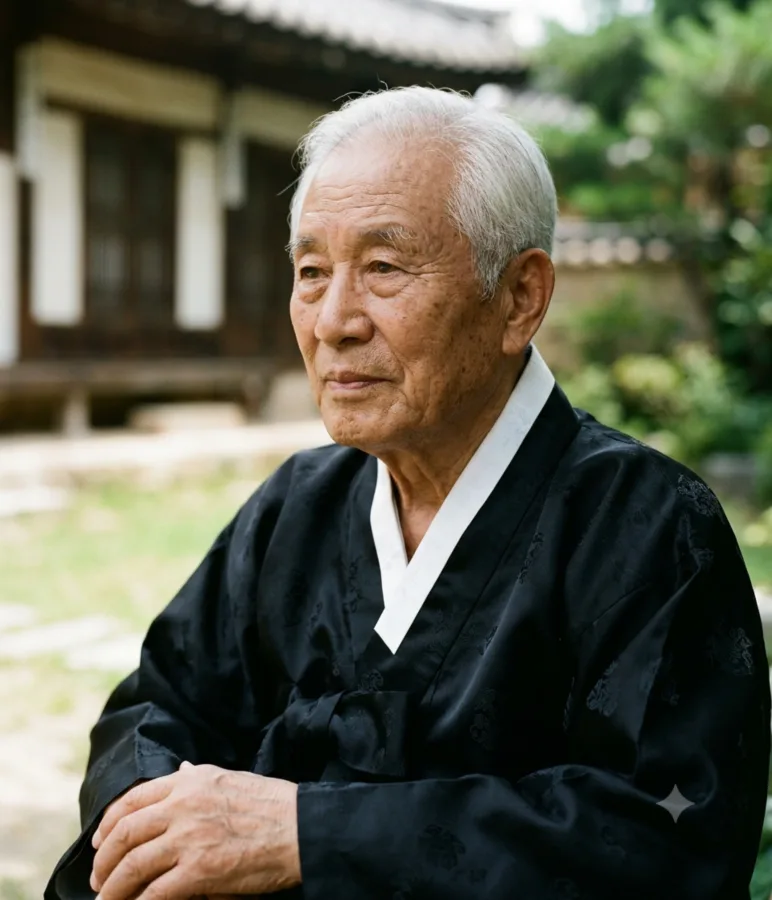

- 1. 개요
- 2. 상세
- 3. 역대 도지사 목록
- 3.1. 관선 도지사 (1948 ~ 1995)
- 3.2. 민선 도지사 (1995 ~ 현재)
- 4. 생존 중인 전직 민선 도지사
- 5. 역대 선거 결과
- 5.1. 제7회 전국동시지방선거
- 5.2. 제8회 전국동시지방선거
- 5.3. 제9회 전국동시지방선거
- 6. 권한 및 역할
- 7. 여담
1. 개요
덕빈북도를 대표하고, 덕빈북도의 사무를 총괄하는 지방자치단체의 장이다. 차관급 정무직 공무원에 해당한다.
1995년 지방자치제 전면 실시와 함께 민선 도지사가 선출되기 시작했다. 현재 제35·36·37대 도지사는 강수성으로, 2026년 치러진 제9회 전국동시지방선거에서 69.90%라는 압도적 득표율로 3선 연임에 성공하며 명실상부한 덕빈북도의 맹주임을 증명했다.
2. 상세
덕빈북도는 효빈광역시와 마찬가지로 민주당계 정당의 절대 텃밭으로 분류된다. 역대 민선 도지사 선거 결과를 보면 단 한 번의 예외도 없이 모두 민주당계 정당 후보(오창석, 이태식, 한광호, 송지훈, 강수성)가 압승을 거두었다. 보수정당이 단 한 번도 도지사 자리를 가져가지 못한, 그야말로 철옹성 같은 지역이다.
현임 강수성 도지사는 기초의원(시의원 1선) → 광역의원(도의원 1선) → 기초단체장(천주시장 3선)을 거쳐 광역자치단체장의 자리까지 한 계단씩 밟아 올라온 입지전적인 인물이다. 지방행정을 빙자한 레일로드 타이쿤 실사판 플레이어라는 별명답게 천주 1호선, 효빈 1호선 약산 연장, 서해경전철 등 덕빈북도 전역을 거대한 철도망으로 덮어버리며 도민들의 엄청난 지지를 얻고 있다.
3. 역대 도지사 목록
3.1. 관선 도지사 (1948 ~ 1995)
초대 임명직 관선 도지사부터 민선 시대 직전까지의 역사이다.
| 대수 | 정당 / 임명 주체 | 이름 | 임기 | 비고 |
|---|---|---|---|---|
| 관선 1차 (1948 ~ 1960) | ||||
| 1대 | 이승만 정부 | 김영기 | 1948.09.15 ~ 1949.08.20 | 초대 도지사 |
| 2대 | 이승만 정부 | 박동식 | 1949.08.21 ~ 1949.12.10 | |
| 3대 | 이승만 정부 | 최진호 | 1949.12.11 ~ 1951.10.12 | |
| 4대 | 이승만 정부 | 이병규 | 1951.10.13 ~ 1952.09.20 | |
| 5대 | 이승만 정부 | 정기선 | 1952.09.21 ~ 1955.08.28 | |
| 6대 | 이승만 정부 | 황도영 | 1955.08.29 ~ 1956.09.15 | |
| 7대 | 이승만 정부 | 윤성민 | 1956.09.16 ~ 1957.03.05 | |
| 8대 | 이승만 정부 | 장수환 | 1957.03.06 ~ 1959.05.18 | |
| 9대 | 이승만 정부 | 신재문 | 1959.05.19 ~ 1960.05.08 | |
| 10대 | 허정 내각 | 강대현 | 1960.05.09 ~ 1960.06.30 | |
| 민선 1차 (1960 ~ 1961) | ||||
| 13대 | 민주당 | 조용철 | 1960.12.29 ~ 1961.05.23 | 5.16 군사정변으로 인해 해임 |
| 관선 2차 (1961 ~ 1995) | ||||
| 14대 | 국가재건최고회의 | 권태영 | 1961.05.25 ~ 1961.08.18 | |
| 15대 | 국가재건최고회의 | 송민우 | 1961.08.19 ~ 1963.12.10 | |
| 16대 | 박정희 정부 | 임재석 | 1963.12.11 ~ 1968.02.25 | |
| 17대 | 박정희 정부 | 오준호 | 1968.02.26 ~ 1971.06.18 | |
| 18대 | 박정희 정부 | 백창수 | 1971.06.19 ~ 1973.10.15 | |
| 19대 | 박정희 정부 | 서영환 | 1973.10.16 ~ 1978.12.20 | |
| 20대 | 박정희 정부 | 구본진 | 1978.12.21 ~ 1980.07.12 | |
| 21대 | 최규하 정부 | 안재훈 | 1980.07.13 ~ 1983.10.08 | |
| 22대 | 전두환 정부 | 홍경수 | 1983.10.09 ~ 1986.08.20 | |
| 23대 | 전두환 정부 | 문상원 | 1986.08.21 ~ 1988.05.15 | |
| 24대 | 노태우 정부 | 유동민 | 1988.05.16 ~ 1990.06.12 | |
| 25대 | 노태우 정부 | 차현기 | 1990.06.13 ~ 1992.04.18 | |
| 26대 | 노태우 정부 | 손정호 | 1992.04.19 ~ 1993.03.01 | |
| 27대 | 김영삼 정부 | 오창석 | 1993.03.02 ~ 1994.09.18 | 훗날 민선 1기로 화려하게 복귀한다. |
| 28대 | 김영삼 정부 | 하태진 | 1994.09.19 ~ 1995.06.30 | 마지막 관선 도지사. |
3.2. 민선 도지사 (1995 ~ 현재)
1995년 제1회 전국동시지방선거 이후로 주민 직선제를 통해 선출된 도지사들이다. 여기서부터 덕빈북도는 민주당계 정당의 절대적인 철옹성으로 거듭난다.
| 대 | 사진 | 이름 | 임기 | 기 | 정당 | 출신지 | 비고 | |
|---|---|---|---|---|---|---|---|---|
| 29대 |
오창석 吳昌碩 |
1995.07.01. ~ 1998.06.30. | 1 | 민주당 | 덕북 군천 | 관선 출신 민선 도지사. 27대 도지사를 역임했다. | ||
| 30대 |  |
이태식 李太植 |
1998.07.01. ~ 2002.06.30. | 2 | 새정치국민회의 | 덕북 천주 | ||
| 31대 | 2002.07.01. ~ 2006.06.30. | 3 | 새천년민주당 | 재선 성공. | ||||
| 32대 |
한광호 韓廣護 |
2006.07.01. ~ 2010.06.30. | 4 | 열린우리당 | 덕북 덕현 | |||
| 33대 | 2010.07.01. ~ 2014.06.30. | 5 | 민주당 | 재선 성공. | ||||
| 34대 |
송지훈 宋智勳 |
2014.07.01. ~ 2018.06.30. | 6 | 새정치민주연합 | 덕북 강주 | |||
| 35대 |  |
강수성 姜水成 (1965 ~ ) |
2018.07.01. ~ 2022.06.30. | 7 | 더불어민주당 | 덕북 천주 | ||
| 36대 | 2022.07.01. ~ 2026.06.30. | 8 | 재선 성공. | |||||
| 37대 | 2026.07.01. ~ 재임 중 | 9 | 3선 성공. 9회 지선 압승. | |||||
4. 생존 중인 전직 민선 도지사
- 2026년 기준 생존 중인 전직 덕빈북도지사는 오창석, 이태식, 한광호, 송지훈 총 4명이다. 사실상 직선제 이후 뽑힌 모든 도지사가 아직까지 생존 중이다.
5. 역대 선거 결과
| 역대 민선 덕빈북도지사 | ||||
| 1995 | 1998 | 2002 | 2006 | 2010 |
| 민주당 | 새정치국민회의 | 새천년민주당 | 열린우리당 | 민주당 |
| 오창석 | 이태식 | 이태식 | 한광호 | 한광호 |
| 2014 | 2018 | 2022 | 2026 | |
| 새정치민주연합 | 더불어민주당 | |||
| 송지훈 | 강수성 | 강수성 | 강수성 | |
5.1. 제1회 전국동시지방선거 (1995년 6월 27일)
 덕빈북도지사 덕빈북도지사
|
|||
|---|---|---|---|
| 기호 | 이름 | 득표수 | 순위 |
| 정당 | 득표율 | 비고 | |
| 2 | 오창석 | 978,116 | 1위 |
| 민주당 | 42.50% | 당선 | |
| 1 | 이동만 | 764,081 | 2위 |
| 민주자유당 | 33.20% | 낙선 | |
| 4 | 박상도 | 347,519 | 3위 |
| 무소속 | 15.10% | 낙선 | |
| 3 | 김동주 | 211,734 | 4위 |
| 자유민주연합 | 9.20% | 낙선 | |
총 투표수 2,301,450표. 민선 1기 선거. 직전 관선 도지사였던 오창석 후보가 민주당 간판으로 출마, 민자당 후보를 약 9%p 차이로 누르며 화려하게 도청으로 복귀했다.
5.2. 제2회 전국동시지방선거 (1998년 6월 4일)
|
덕빈북도지사
|
|||
|---|---|---|---|
| 기호 | 이름 | 득표수 | 순위 |
| 정당 | 득표율 | 비고 | |
| 2 | 이태식 | 1,227,658 | 1위 |
| 새정치국민회의 | 52.80% | 당선 | |
| 1 | 김철수 | 839,365 | 2위 |
| 한나라당 | 36.10% | 낙선 | |
| 3 | 하성진 | 197,634 | 3위 |
| 자유민주연합 | 8.50% | 낙선 | |
| 4 | 정인교 | 60,453 | 4위 |
| 국민신당 | 2.60% | 낙선 | |
총 투표수 2,325,110표. 새정치국민회의 이태식 후보가 김대중 정부 출범의 컨벤션 효과를 등에 업고 과반 득표에 성공하며 당선되었다.
5.3. 제3회 전국동시지방선거 (2002년 6월 13일)
|
덕빈북도지사
|
|||
|---|---|---|---|
| 기호 | 이름 | 득표수 | 순위 |
| 정당 | 득표율 | 비고 | |
| 2 | 이태식 | 1,366,280 | 1위 |
| 새천년민주당 | 58.10% | 당선 | |
| 1 | 이재선 | 832,466 | 2위 |
| 한나라당 | 35.40% | 낙선 | |
| 3 | 송동민 | 152,854 | 3위 |
| 민주노동당 | 6.50% | 낙선 | |
총 투표수 2,351,600표. 전국적인 한나라당의 압승 분위기 속에서도, 덕빈북도만큼은 이태식 지사가 탄탄한 현역 프리미엄을 과시하며 가볍게 재선에 성공, 철옹성임을 증명했다.
5.4. 제4회 전국동시지방선거 (2006년 5월 31일)
|
덕빈북도지사
|
|||
|---|---|---|---|
| 기호 | 이름 | 득표수 | 순위 |
| 정당 | 득표율 | 비고 | |
| 1 | 한광호 | 1,080,595 | 1위 |
| 열린우리당 | 45.30% | 당선 | |
| 2 | 김문호 | 982,793 | 2위 |
| 한나라당 | 41.20% | 낙선 | |
| 3 | 최인수 | 226,615 | 3위 |
| 민주당 | 9.50% | 낙선 | |
| 4 | 이정희 | 95,417 | 4위 |
| 민주노동당 | 4.00% | 낙선 | |
총 투표수 2,385,420표. 열린우리당에 대한 거센 심판론과 민주당으로의 표 분산 탓에 보수(한나라당)에게 자리를 내줄 뻔했으나, 새롭게 등판한 한광호 후보가 4%p 차이의 신승을 거두며 간신히 민주당계 정당의 텃밭을 사수했다.
5.5. 제5회 전국동시지방선거 (2010년 6월 2일)
|
덕빈북도지사
|
|||
|---|---|---|---|
| 기호 | 이름 | 득표수 | 순위 |
| 정당 | 득표율 | 비고 | |
| 2 | 한광호 | 1,336,878 | 1위 |
| 민주당 | 55.20% | 당선 | |
| 1 | 박재완 | 930,002 | 2위 |
| 한나라당 | 38.40% | 낙선 | |
| 5 | 윤미향 | 155,000 | 3위 |
| 민주노동당 | 6.40% | 낙선 | |
총 투표수 2,421,880표. 한광호 지사가 민주당 간판으로 과반 득표를 올리며 여유롭게 재선에 성공했다.
5.6. 제6회 전국동시지방선거 (2014년 6월 4일)
|
덕빈북도지사
|
|||
|---|---|---|---|
| 기호 | 이름 | 득표수 | 순위 |
| 정당 | 득표율 | 비고 | |
| 2 | 송지훈 | 1,447,067 | 1위 |
| 새정치민주연합 | 58.30% | 당선 | |
| 1 | 정병국 | 871,219 | 2위 |
| 새누리당 | 35.10% | 낙선 | |
| 3 | 이수진 | 163,819 | 3위 |
| 통합진보당 | 6.60% | 낙선 | |
총 투표수 2,482,105표. 새정치민주연합의 송지훈 후보가 무난하게 당선되며 덕빈북도의 민주당계 아성을 그대로 이어갔다.
5.7. 제7회 전국동시지방선거 (2018년 6월 13일)
|
덕빈북도지사
|
|||
|---|---|---|---|
| 기호 | 이름 | 득표수 | 순위 |
| 정당 | 득표율 | 비고 | |
| 1 | 강수성 | 1,746,378 | 1위 |
| 더불어민주당 | 68.45% | 당선 | |
| 2 | 이현수 | 625,073 | 2위 |
| 자유한국당 | 24.50% | 낙선 | |
| 3 | 김재성 | 127,566 | 3위 |
| 바른미래당 | 5.00% | 낙선 | |
| 5 | 박지은 | 52,303 | 4위 |
| 정의당 | 2.05% | 낙선 | |
총 투표수 2,551,320표. 천주시장 3선을 꽉 채운 더불어민주당 강수성 후보가 보수 진영이 지리멸렬한 틈을 타 68%가 넘는 압도적 표차로 가볍게 당선되었다.
5.8. 제8회 전국동시지방선거 (2022년 6월 1일)
|
덕빈북도지사
|
|||
|---|---|---|---|
| 기호 | 이름 | 득표수 | 순위 |
| 정당 | 득표율 | 비고 | |
| 1 | 강수성 | 1,803,555 | 1위 |
| 더불어민주당 | 69.30% | 당선 | |
| 2 | 오수철 | 708,930 | 2위 |
| 국민의힘 | 27.24% | 낙선 | |
| 3 | 강숭은 | 58,036 | 3위 |
| 진보당 | 2.23% | 낙선 | |
| 4 | 원송만 | 32,011 | 4위 |
| 정의당 | 1.23% | 낙선 | |
총 투표수 2,602,532표. "새로운 변화, 행복한 덕빈"이라는 표어를 내걸고 강수성 지사가 재선에 성공했다. 도민들은 저 슬로건의 '변화'가 사실상 '전철 노선도 색깔 변화(노선 연장)'를 뜻한다는 것을 이미 알고 있었으나, 매일 서해시와 효빈시 외곽의 빌어먹을 교통 체증에 시달리느니 차라리 온 국토를 파뒤집어서라도 기차를 타는 게 낫다며 69%가 넘는 지지를 몰아주었다.
5.9. 제9회 전국동시지방선거 (2026년)
|
덕빈북도지사
|
|||
|---|---|---|---|
| 기호 | 이름 | 득표수 | 순위 |
| 정당 | 득표율 | 비고 | |
| 1 | 강수성 | 2,007,690 | 1위 |
| 더불어민주당 | 69.90% | 당선 | |
| 2 | 오수철 | 699,388 | 2위 |
| 국민의힘 | 24.35% | 낙선 | |
| 4 | 강숭은 | 72,955 | 3위 |
| 진보당 | 2.54% | 낙선 | |
| 5 | 진욱현 | 66,636 | 4위 |
| 개혁신당 | 2.32% | 낙선 | |
| 3 | 원송만 | 25,563 | 5위 |
| 정의당 | 0.89% | 낙선 | |
총 투표수 2,872,232표. 국민의힘 오수철 후보를 비롯한 제3지대 도전자들을 상대로 무려 69.90%(200만 표 돌파)라는 압도적인 득표율을 기록하며 가볍게 3선 고지에 올랐다. 개혁신당, 진보당, 정의당 등 군소 정당 후보들이 나란히 1~2%대 득표에 머무르며 지리멸렬한 가운데, '철도망 확충'이라는 치트키급 공약과 막강한 현역 프리미엄으로 덕빈북도의 맹주임을 다시 한번 완벽하게 입증했다.
6. 권한 및 역할
덕빈북도지사는 덕빈북도의 행정 사무를 총괄하며, 도 소속 공무원을 지휘·감독한다.
- 자치입법권: 조례안 제출권 및 공포권
- 조직편성권: 도청 및 산하 기관 조직 개편
- 인사권: 부지사(경제문화), 실·국장 등 소속 공무원 임면권, 산하 공기업(덕빈북도 개발공사 등) 사장 임명권
- 재정권: 예산안 편성 및 집행권
7. 여담
- 현임 강수성 지사는 지방행정을 빙자한 레일로드 타이쿤 실사판 플레이어라는 별명을 가지고 있다. 길이 막히면 파내려가고 그래도 안 되면 하늘로 띄워서라도 덕빈북도의 모든 곳에 철도를 놓겠다는 무시무시한 야망을 실현 중이다.
- 바로 옆 동네 효빈광역시의 박효빈 시장 역시 지독한 철도 예찬론자라, 이 두 사람이 회의에서 만나면 광역교통망 노선 연장 이야기만으로 밤을 새운다는 소문이 파다하다.
심시티 코옵(Co-op) 모드 진행 중 - 과거 효빈시의 최악의 폭군 윤대환 전 시장과 전면전을 불사했던 극강의 전투력을 갖추고 있다. 강 지사가 철도에 집착하게 된 것도 윤대환이 버스(두청운수) 요금을 무기 삼아 벌인 만행을 두 번 다시 겪지 않기 위해서라고.